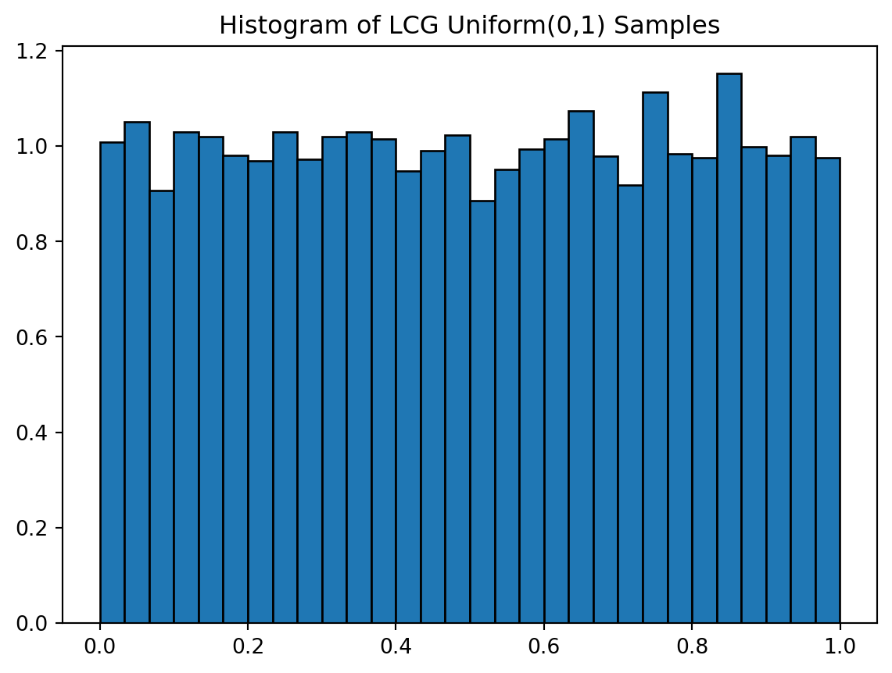
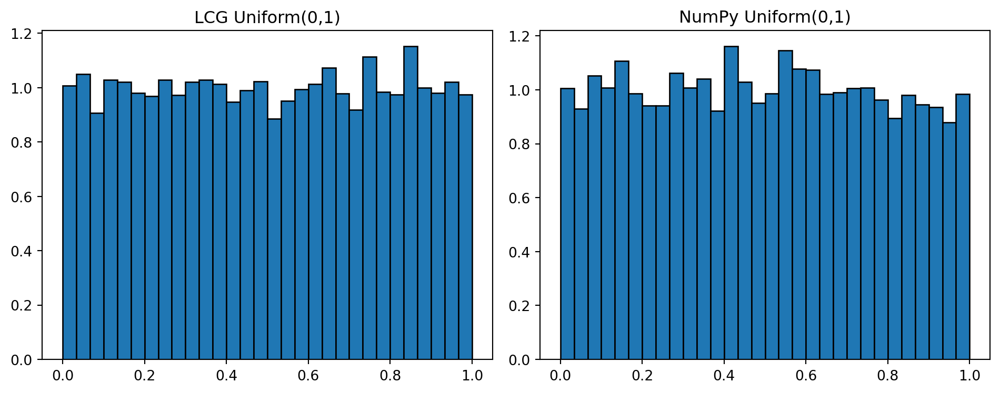
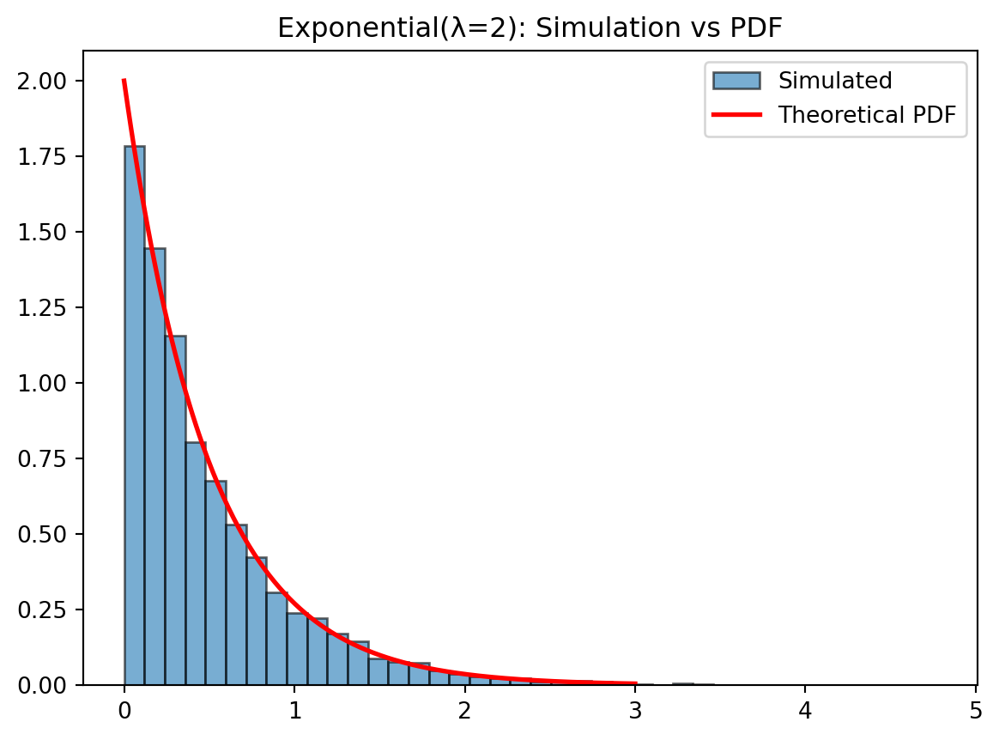
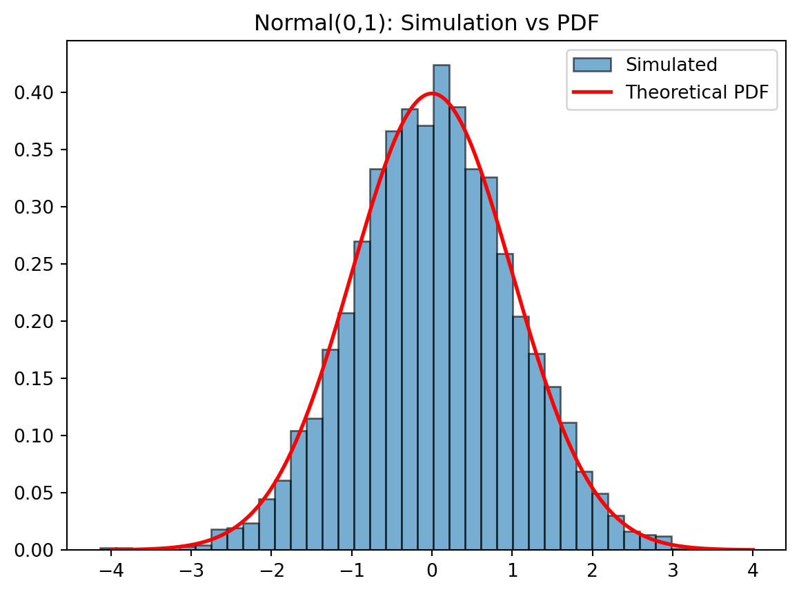
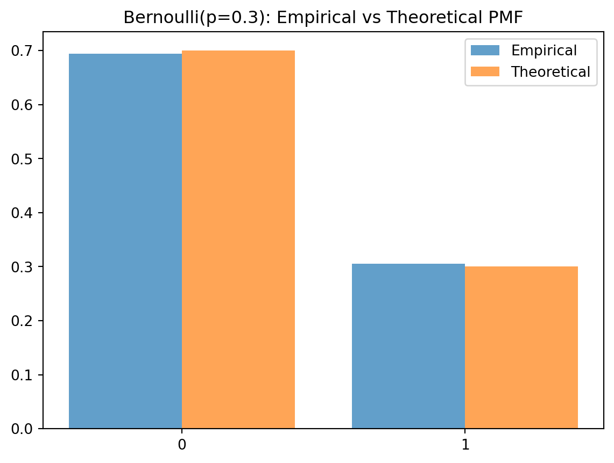
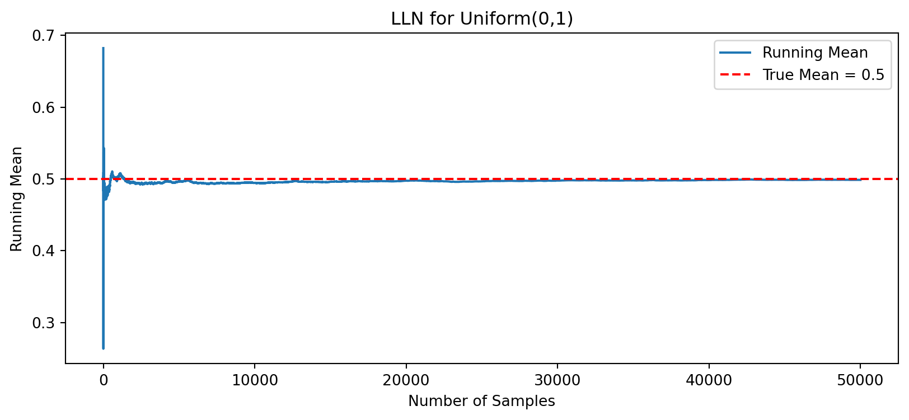
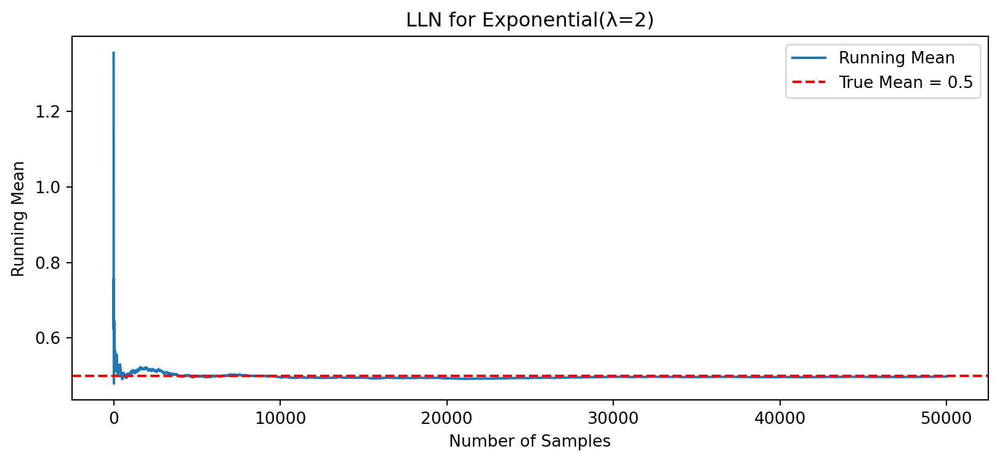

import sys, numpy as np
print("Python:", sys.version.split()[0])
print("NumPy:", np.__version__)Python: 3.12.3
NumPy: 2.4.2Objectives
This workshop consists of two parts:
By the end of this workshop, you should be able to:
Navigate and use Python effectively within Jupyter Notebook and Visual Studio Code;
Implement basic Python commands relevant to simulation tasks (e.g., variables, functions, loops, and random number generation);
Recall and apply key probability concepts that underpin simulation methods.
Mini tasks
import sys, numpy as np
print("Python:", sys.version.split()[0])
print("NumPy:", np.__version__)Python: 3.12.3
NumPy: 2.4.2To run code cells in VS Code, you can
Using the Play Icon: Click the “Run Cell” (▶) button that appears to the left of the code cell when you hover over it or select it. The output will be displayed directly below the cell.
Using Keyboard Shortcuts:
Ctrl+Enter (Windows/Linux) or Cmd+Enter (macOS): Runs the currently selected cell and the focus remains on the current cell.Shift+Enter: Runs the currently selected cell and automatically moves the focus to the next cell, or inserts a new cell if you are at the end.Alt+Enter (Windows/Linux) or Option+Enter (macOS): Runs the currently selected cell and inserts a new cell immediately below it, but the focus remains on the current cell.Run All Cells: Click the double arrow icon (⏭) in the main notebook toolbar to run all cells in the notebook sequentially.
Run Cells Above/Below: Right-click a specific cell and select Run All Above or Run All Below from the context menu.
Python supports the usual mathematical operations on numbers
| Operator | Operation | Example |
|---|---|---|
| + | Addition | 2 + 2 = 4 |
| - | Subtraction | 7 - 2 = 5 |
| * | Multiplication | 2 * 3 = 6 |
| / | Float division | 22 / 7 = 3.142857 |
| ** | Exponentiation | 3 ** 2 = 9 |
| abs() | Absolute value | abs(-20) = 20 |
| // | Integer division | 22 // 7 = 3 |
| % | Modulus/Remainder | 22 % 7 = 1 |
Try writing the mathematical operations given in the above example and see whether you get the same answer. To insert a new code cell, click on the ‘+’ button on the toolbar above or hovering at the bottom of the cell and click ‘+ Code’.
The data type of an object determines what values it can have and what operations can be performed on it. Whole numbers are represented using the integer data type (or int), which can be either positive or negative. Numbers that can have fractional parts are represented as floating-point (or float) values. Complex numbers (or complex), which consist of a real (\(x\)) and an imaginary part (\(y\)) is represented by \(x + yj\).
| Data Type | Example |
|---|---|
Integers (int) |
-2, -1, 0, 1, 2, 3, 4, 5 |
Floating-point numbers (float) |
-1.25, -1.0, -0.5, 0.0, 0.5, 1.0, 1.25 |
Complex numbers (complex) |
2 + 3j |
Strings (str) |
‘a’, ‘aa’, ‘aaa’, ‘Hello!’, ‘11 cats’ |
Python provides a special function called type() that tells us the data type (or class) of any value. For example,
type(-2)intMoreover, type conversion also available using the following functions:
| Conversion function | Example | Value returned |
|---|---|---|
int(<float>) |
int(3.14) |
3 |
int(<str>) |
int("100") |
100 |
float(<int or str>) |
float(15) |
15.0 |
str(<any value>) |
str(100) |
“100” |
type() function for the following and answer the following questions:22/7, 3e-04, Hello, "Hello!", 'Hello!', True, ["cat", 3.14], {'name': 'Sam', 'id': 1}.
bool, list, and dict?int. If you encounter an error, what do you think is the cause?A variable is an identifier that stores a value. We can name a variable anything as long as it obeys the following rules:
_) character._) are deemed as unuseful.<variable> = <expr>
A variable can be assigned many times, and it will always retain the value of the most recent assignment. For example,
x = 2
x2x = x + 1
x3Also, simultaneous assignment where Python evaluate all expressions on the right-hand side and then assign these results to the corresponding variables named on the left-hand side is possible with the following form:
<var1>, <var2>, ... , <varn> = <expr1>, <expr2>, ... , <exprn>
For example,
x = 5
y = 2
sum, diff = x+y, x-ysum, diff(7, 3)Note
del() function to delete objects including variables, lists, or parts of a list, etc. Or, we can use a %reset command.del(x, y, sum, diff) and %reset.By using input() function, we can assign textual input or get an information from user and then store it into a variable. The statement will look like this:
<variable> = input(<prompt>),
where <prompt> is a string expression that is used to prompt the user for input. Upon executing the statement, Python will print out the prompt and then the interpreter will be paused waiting for user input.
When the user input is a number, we need to use eval() function to wrap around input() function:
<variable> = eval(input(<prompt>))
For example,
def info():
name = input("What's your name?")
num = eval(input("What's your favourite number?"))
print("Nice to meet you, {}! You are blessed with {} cookies!".format(name, str(num)))
# info()Note: In a VS Code Jupyter notebook, the input box for an input() call appears in a dedicated input field at the top of the window or near the cell’s output area.
From the above example:
info() using the def keyword where Python print out the prompts “What’s your name?” and “What’s your favourite number?” and then store the user input in the variable ‘name’ and ‘num’, respectively.print() function is used to display the sentences. The format() function allows us to format the specified value(s) and insert them inside the string’s placeholder, {}.(), e.g., info().Functions can also take parameters. For example,
def info2(name, num):
print("Nice to meet you, {}! You are blessed with {} cookies!".format(name, str(num)))
info2("Sam", 10000000)Nice to meet you, Sam! You are blessed with 10000000 cookies!Why do we need to use functions?
hello_world.py.hello_world.py with the content: print("Hello, World!").import hello_worldSo far, we have been using print() function to show the human user a string representing what is going on inside computer. However, the computer cannot make use of that printing in further function. Considering when we would like to break down a difficult problem into many smaller problems, how can the results in one function be passed to another function? That is where the return statement comes in.
When creating a function using the def statement, you can specify what the return value should be with a return statement. A return statement consists of the following:
return keyword.For example,
import numpy
def fiveNumSummary(data):
min = numpy.min(data)
q1 = numpy.percentile(data, 25)
q2 = numpy.percentile(data, 50)
q3 = numpy.percentile(data, 75)
max = numpy.max(data)
return min, q1, q2, q3, max
x = [1,2,15,3,6,17,8,16,8,3,10,12,16,12,9]
fiveNumSummary(x)(np.int64(1), np.float64(4.5), np.float64(9.0), np.float64(13.5), np.int64(17))Write a function to calculate an average value between the two numbers.
A definite loop executes a pre-specified number of times, iterations, which is known when program loaded. The statement will look like this:
for <var> in <sequence>:
<body>It is noted that the beginning and end of the body are indicated by indentation, and iterations are over sequences. For example,
print("num", "square")
for num in list(range(5)):
print(num, num*num, sep=' '*5)num square
0 0
1 1
2 4
3 9
4 16The above example shows the numbers returned from list(range(5)) and its square value. Notice that Python uses zero-based indexing, which means that the first element has an index 0.
4.1 Write a function to calculate factorial of a given number.
4.2 Write a function to calculate a future value of given principal in 10-year time
Hints: You may find some of these built-in functions useful.
| Function | Description |
|---|---|
range(stop) |
Returns list of ints from 0 to stop - 1 |
range(start, stop) |
Returns list of ints from start to stop - 1 |
range(start, stop, step) |
Returns list of ints from start to stop counting by step |
round(x) |
Returns nearest whole value of x (as a float) |
For definite loop, we have to identify how many iterations there are. This is working just fine as long as the number of iterations is not large, or worse, the number of iterations is unknown or predefined by some conditions.
It would be much more advantageous if the computer could take care of counting the numbers of iterations for us. However, the for loop is no longer feasible as it is a definite loop in which the number of iterations is determined when the loop starts. The solution to this lies in another kind of loop, the indefinite or conditional loop. An indefinite loop keeps iterating until certain conditions are met. But do keep in mind that there is no guarantee ahead of time regarding how many times the loop will go around.
In Python, an indefinite loop is implemented using a while statement
while <condition>:
<body>where <condition> is a Boolean expression, and the body is a sequence of one or more statements. Also, we can also use break and continue statements to immediately exits the while loop’s clause or to return the control to the beginning of the while loop. For example,
spam = 0
while spam < 5:
print('Hello, world.')
spam = spam + 1Hello, world.
Hello, world.
Hello, world.
Hello, world.
Hello, world.while True:
print('Who are you?')
name = input()
if name != 'Sam':
continue
print('Hello, Sam. What is the password? (It is a fish.)')
password = input()
if password == 'swordfish':
break
print('Access granted.')In the previous sections, we have viewed computer programs as sequences of instructions that are followed one after the other. However, sequencing is not sufficiently enough to solve every problem, and we need to alter the sequential flow of a program to suit the needs of a particular situation.
In this section, we will take a look at decision structures, which are statements that allow a program to execute different sequences of instructions for different cases.
if statement: one-way decisionif <condition>:
<body (statements to execute if condition is True)>where <condition> is a Boolean expression evaluates to values True or False, and <body> is a sequence of one or more statements indented under the if heading.
In order to write down a condition, we will need a relational operator or a logical operator to compare the values of two expression. The tables below show the list of available comparison operators and logical operators.
Comparison operators
| Operator | Mathematics | Meaning |
|---|---|---|
< |
< | Less than |
<= |
≤ | Less than or equal to |
== |
= | Equal to |
>= |
≥ | Greater than or equal to |
> |
> | Greater than |
!= |
≠ | Not equal to |
Logical/boolean operators
| Operation | Meaning |
|---|---|
| not | Inverse the comparison result |
| and | Returns True only if both inputs are True |
| or | Returns False only if both inputs are False |
Try executing the following line of code:
2021 == 2021.02021 == '2021''Hello' == 'hello''dog' != 'cat'True != FalseTrue is not False(1 < 3) and (3 < 5)(1 > 3) and (3 > 5)(1 < 3) or (3 == 5) or (4 + 1 == 7)if 2 + 2 == 4 and not 2 + 2 == 5 and 2 * 2 == 2 + 2:
print("These are true!")2021 == 2021.0Trueif-else statement: two-way decisionsIn Python, a two-way decision can be implemented by attaching an else clause onto an if-clause. The statement will look like this:
if <condition>:
<statements if True>
else:
<statements if False>For example, we can write a function to determine roots of a quadratic equation \(ax^2+bx+c=0\) and use if-else statements to handle the case of no roots, two repeated roots, and two distinct roots.
Note:
import math
# Quadratic solver
def roots(a, b, c):
check = b**2 - (4*a*c)
if check < 0:
print("The roots are complex.")
else:
if check == 0:
r = -b / (2*a)
print("There are two repeated roots at", r)
else:
discRoot = math.sqrt(check)
r1 = (-b + discRoot) / (2*a)
r2 = (-b - discRoot) / (2*a)
print("The solution are {0} and {1}".format(r1, r2))
roots(1, 7, 12)The solution are -3.0 and -4.0elif statement: multi-way decisionsIt is a good idea to write a pseudocode of an algorithm before we start writing the program itself, as it allows us to focus on main logic without being distracted by programming languages syntax.
So far, our quadratic solver is technically working as expected. However, if we try writing down a pseudocode, we will see that there are exactly three possible paths.
Check the value of \(b^2-4ac\): - when < 0: handle the case of no roots - when = 0: handle the case of two repeated roots - when > 0: handle the case
Instead of using nest if-else statements, there is another way to write multi-way decisions in Python that preserves the semantics of the nested structures but gives it a more appealing look. The idea is to combine an else followed immediately by an if into a single clause called an elif (pronounced “ell-if”). The statement will look like this:
if <condition1>:
<case 1 statements>
elif <condition2>:
<case 2 statements>
elif <condition3>:
<case 3 statements>
...
else:
<default statements>This form is used to set off any number of mutually exclusive code blocks. Python will evaluate each condition in turn looking for the first one that is true. If a true condition is found, the statements indented under that condition are executed, and control passes to the next statement after the entire if-elif-else.
For example, we can implement the roots(a, b, c) function using the if-elif-else statements to handle the case of no roots, two repeated roots, and two distinct roots.
def roots2(a, b, c):
check = b**2 - (4*a*c)
if check < 0:
print("The roots are complex.")
elif check == 0:
root = -b/(2*a)
print("There are repeated two roots at:", root)
else:
root1 = (-b + math.sqrt(check)) / (2*a)
root2 = (-b - math.sqrt(check)) / (2*a)
print("The roots are:", root1, "and", root2)
roots2(1, 4, 4)There are repeated two roots at: -2.0Our quadratic program uses decision structures to avoid taking the square root of a negative number and generating an error at runtime. This is a common pattern in many programs: using decisions to protect against rare but possible errors.
In the case of the quadratic solver, we checked the data before the call to the sqrt() function. Sometimes programs become so peppered with decisions to check for special cases that the main algorithm for handling the run-of-the-mill cases seems completely lost. Programming language designers have come up with mechanisms for exception handling that help to solve this design problem. The idea of an exception-handling mechanism is that the programmer can write code that catches and deals with errors that arise when the program is running. Rather than explicitly checking that each step in the algorithm was successful, a program with exception handling can in essence say, “Do these steps, and if any problem crops up, handle it this way.”
try:
<body>
except <ErrorType>:
<handler>For example,
def roots3(a, b, c):
try:
discRoot = math.sqrt(b**2 - (4 * a * c))
r1 = (-b + discRoot) / (2 * a)
r2 = (-b - discRoot) / (2 * a)
print("The solutions are:", r1, r2)
except ValueError:
print("No real roots")
roots3(1, 2, 3)No real rootsHere is a collection of summary and reference sheets I prepared for the first-year statistics and probabilities unit:
There might not be a lot of exercises for this part, the objective is that you get familiar with Python code structure. It is highly recommended that you make your own notes (or comments using #) to describe what is being done for every line of code.
The following are some basic Python libraries for statistics, data analysis, simulation, and visualisation.
Key Libraries
import pandas as pd (DataFrames)import numpy as np (Numerical ops)from scipy import stats (Tests & Distributions)import statsmodels.api as sm (Modelling & Regression)import matplotlib.pyplot as plt (Plotting)To install package, run pip install <package name>.
Simulation begins with the ability to generate random‑looking numbers. Computers, however, are deterministic machines—they cannot produce true randomness on their own. Instead, they use pseudorandom number generators (PRNGs): algorithms that produce sequences of numbers that behave like random samples.
In this section, we will:
This gives us the computational foundation for all later simulation work.
From the lecture, we learned that an LCG produces a sequence of integers using a recurrence relation: \[ X_{n+1} = (aX_n + c) \mod m, \] where \(X\) is the sequence of pseudo-random values and
Good choices of \((a,c,m)\) give long, well‑distributed sequences. Poor choices give visible patterns—great for teaching, not great for real simulation.
For example,
def lcg(n, seed=12345, a=1103515245, c=12345, m=2**31):
"""Generate n pseudorandom integers using a simple LCG."""
x = seed
out = []
for _ in range(n):
x = (a * x + c) % m
out.append(x)
return out
lcg(10) # generate 10 pseudorandom integers[1406932606,
654583775,
1449466924,
229283573,
1109335178,
1051550459,
1293799192,
794471793,
551188310,
803550167]Then, we can write a function lcg_uniform() that returns the LCG integer output as Uniform(0,1).
def lcg_uniform(n, seed=12345):
m = 2**31
ints = lcg(n, seed=seed, m=m)
return [x / m for x in ints]
lcg_uniform(5)[0.6551540484651923,
0.30481432331725955,
0.6749606337398291,
0.10676848376169801,
0.5165744470432401]Quick visual check: Does it look uniform?
import matplotlib.pyplot as plt
u = lcg_uniform(10000)
plt.hist(u, bins=30, density=True, edgecolor='black')
plt.title("Histogram of LCG Uniform(0,1) Samples")
plt.show()
Comparing to NumPy’s Generator
NumPy uses a high‑quality PRNG. Let’s compare histograms side‑by‑side.
import numpy as np
u_np = np.random.default_rng(123).uniform(size=10_000)
fig, ax = plt.subplots(1, 2, figsize=(10, 4))
ax[0].hist(u, bins=30, density=True, edgecolor='black')
ax[0].set_title("LCG Uniform(0,1)")
ax[1].hist(u_np, bins=30, density=True, edgecolor='black')
ax[1].set_title("NumPy Uniform(0,1)")
plt.tight_layout()
plt.show()
Discrete RVs (e.g., Bernoulli, Binomial) PMF gives the probability of each possible value \[ P(X=x) \] Continuous RVs (e.g., Exponential, Normal) - PDF describes the shape of the distribution \[ f(x) \] - CDF gives cumulative probability \[ F(x)=P(X\leq x) \] Simulation gives us samples. Theory gives us functions.
We already simulated Exponential(λ) using inverse transform. Now we compare the simulated histogram to the theoretical PDF: \[ f(x)=\lambda e^{-\lambda x},\quad x\geq 0 \]
import numpy as np
import matplotlib.pyplot as plt
# Simulate
lam = 2
samples = -np.log(np.random.default_rng().uniform(size=5000)) / lam
# Theoretical PDF
x = np.linspace(0, 3, 300)
pdf = lam * np.exp(-lam * x)
# Plot
plt.hist(samples, bins=40, density=True, alpha=0.6, edgecolor='black', label='Simulated')
plt.plot(x, pdf, 'r-', lw=2, label='Theoretical PDF')
plt.title("Exponential(λ=2): Simulation vs PDF")
plt.legend()
plt.show()
The Normal distribution has PDF: \[ f(x)=\frac{1}{\sqrt{2\pi }}e^{-x^2/2} \]
from scipy.stats import norm
# Simulate Normal(0,1)
samples_norm = np.random.default_rng().normal(size=5000)
# Theoretical PDF
x = np.linspace(-4, 4, 300)
pdf = norm.pdf(x)
plt.hist(samples_norm, bins=40, density=True, alpha=0.6, edgecolor='black', label='Simulated')
plt.plot(x, pdf, 'r-', lw=2, label='Theoretical PDF')
plt.title("Normal(0,1): Simulation vs PDF")
plt.legend()
plt.show()
For Bernoulli(p), the theoretical PMF: \[ P(X=1)=p,\quad P(X=0)=1-p \]
p = 0.3
samples_bern = (np.random.default_rng().uniform(size=5000) < p).astype(int)
# Empirical PMF
vals, counts = np.unique(samples_bern, return_counts=True)
empirical = counts / counts.sum()
# Theoretical PMF
theoretical = np.array([1-p, p])
plt.bar([0,1], empirical, width=0.4, label='Empirical', alpha=0.7)
plt.bar([0.4,1.4], theoretical, width=0.4, label='Theoretical', alpha=0.7)
plt.xticks([0.2,1.2], ['0','1'])
plt.title("Bernoulli(p=0.3): Empirical vs Theoretical PMF")
plt.legend()
plt.show()
The Law of Large Numbers (LLN) is one of the most important ideas in probability and simulation. It explains why simulation works and why empirical averages converge to theoretical expectations. In simple terms:
As we take more and more samples, the sample mean gets closer to the true mean.
This is why Monte Carlo methods are powerful: averages stabilise. We’ll demonstrate LLN using simulation.
For a Uniform(0,1) random variable: \(\mathbb{E}[X]=0.5\)
We will: - Generate many Uniform(0,1) samples - Compute the running average - Watch it converge to 0.5
import numpy as np
import matplotlib.pyplot as plt
rng = np.random.default_rng(123)
n = 50_000
samples = rng.uniform(size=n)
running_mean = np.cumsum(samples) / np.arange(1, n+1)
plt.figure(figsize=(10,4))
plt.plot(running_mean, label='Running Mean')
plt.axhline(0.5, color='red', linestyle='--', label='True Mean = 0.5')
plt.title("LLN for Uniform(0,1)")
plt.xlabel("Number of Samples")
plt.ylabel("Running Mean")
plt.legend()
plt.show()
For an Exponential(λ) distribution: \(\mathbb{E}[X]=\frac{1}{\lambda }\)
Let’s use \(\lambda = 2\), so the true mean is 0.5 again.
lam = 2
samples_exp = -np.log(rng.uniform(size=n)) / lam
running_mean_exp = np.cumsum(samples_exp) / np.arange(1, n+1)
plt.figure(figsize=(10,4))
plt.plot(running_mean_exp, label='Running Mean')
plt.axhline(1/lam, color='red', linestyle='--', label='True Mean = 0.5')
plt.title("LLN for Exponential(λ=2)")
plt.xlabel("Number of Samples")
plt.ylabel("Running Mean")
plt.legend()
plt.show()
For Bernoulli(p): \(\mathbb{E}[X]=p\)
Let’s use p = 0.3.
p = 0.3
samples_bern = (rng.uniform(size=n) < p).astype(int)
running_mean_bern = np.cumsum(samples_bern) / np.arange(1, n+1)
plt.figure(figsize=(10,4))
plt.plot(running_mean_bern, label='Running Mean')
plt.axhline(p, color='red', linestyle='--', label='True Mean = 0.3')
plt.title("LLN for Bernoulli(p=0.3)")
plt.xlabel("Number of Samples")
plt.ylabel("Running Mean")
plt.legend()
plt.show()
Basic Summaries
| Task | Function |
|---|---|
| Mean | np.mean(x) |
| Variance | np.var(x) |
| Std dev | np.std(x) |
| Quantiles | np.quantile(x, 0.95) |
| Min / Max | np.min(x), np.max(x) |
Random Number Generation
| Task | Function | Example |
|---|---|---|
| Set (global) seed | np.random.seed() |
np.random.seed(123) |
| Set (local) seed | np.random.default_rng() |
rng = np.random.default_rng(123) |
| Uniform(0,1) | np.random.uniform() |
np.random.uniform(0,1,1000) |
| Bernoulli / Binomial | np.random.binomial() |
np.random.binomial(1, 0.3, 1000) |
| Normal | np.random.normal() |
np.random.normal(0,1,1000) |
| Exponential | np.random.exponential() |
np.random.exponential(1,1000) |
Working with Replication
| Task | Function |
|---|---|
| Cumulative sum | np.cumsum(x) |
| Sequence 1…n | np.arange(1, n+1) |
| Running mean | np.cumsum(x) / np.arange(1,n+1) |
Probability Distributions (scipy.stats)
stats.norm.rvs() (random var), stats.norm.pdf() (density)stats.binom.rvs()stats.uniform.rvs()Plotting (Matplotlib)
| Task | Function |
|---|---|
| Histogram | plt.hist(x, bins=30) |
| Line plot | plt.plot(x) |
| Add horizontal line | plt.axhline(value) |
Sweigart, A. (2021). Python cheatsheet. https://www.pythoncheatsheet.org/
Zelle, J. (2016). Python programming: An introduction to computer science (3rd ed.). Franklin, Beedle & Associates.
Vasiliev, Y. (2022). Python for data science: A hands-on introduction. No Starch Press.
Haslwanter, T. (2016). An introduction to statistics with Python: With applications in the life sciences. Springer.